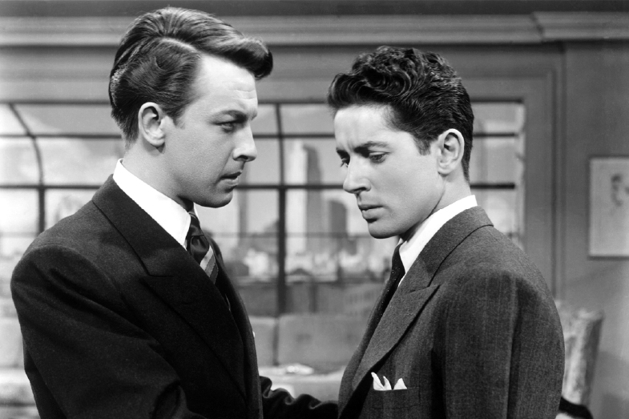
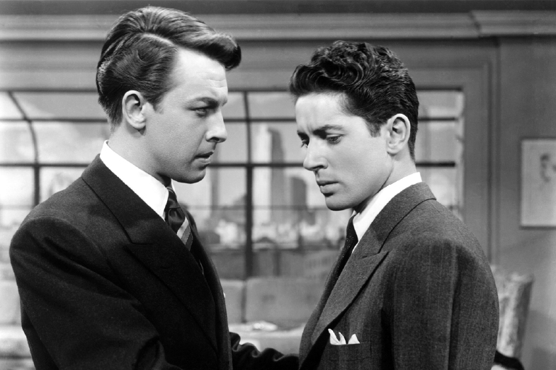
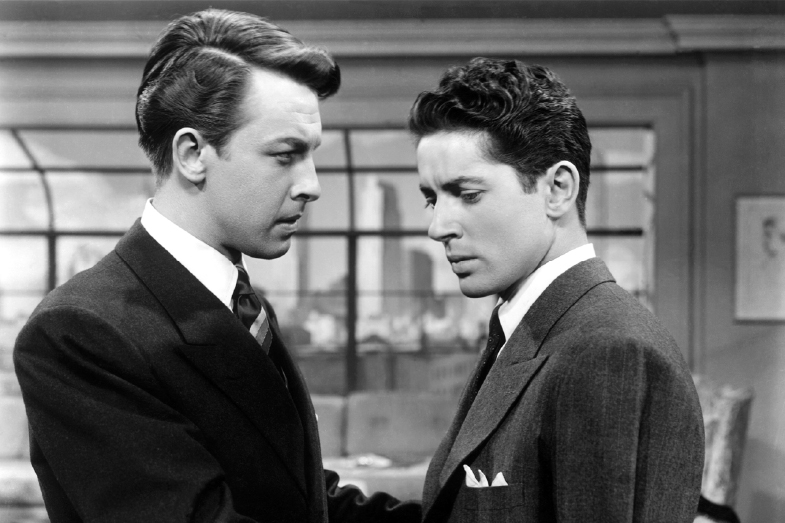

FILMOGRAPHY
ROPE
1948
ROPE(로프)는 1948년 제작된
알프레드 히치콕 감독이ㅡ 스릴러 영화이다.
히치콕 최초의 컬러 영화이자
제임스 스튜어트가 처음으로 출연한 영화이다.
히치콕이 데이비드 O.셀즈닉으로부터 벗어나
트랜스아틀란틱 픽처스를 설립한 후
잉그리드 버그만이 출연한 '남화귀선'을 제작하기 전에
제작한 영화로 편집이 거의 없는 영화로도 유명하다.
알프레드 히치콕, 그는 영국과 미국을 오가며 활동한 영화 감독이다.
흔히 서스펜스의 대가라는 칭송을 받고 있으며,
그의 필모그래피는 공포가 주를 이룬다.
그의 작품은 대부분 죄 없는 사람들이 자신을 통제할 수 없는
상황에 휘말리면서 벌어지는 일을 담고 있으며,
이런 영화는 사소한 실수가 불러일으키는 것을 일깨우게 한다.
그는 감독 외에도 제작, 각본, 편집, 미술에 능하였다.
최초의 스타 감독으로 평가받기도 한다.
히치콕은 영화사에서 자막을 도안하는 일을 하면서
영화계에 입문하였고, 그곳에서 영화 제작 기술을 익혔다.
1922년 히치콕은 시모어 힉스 (Seymour Hicks)와 함께 공동으로
영화 '항상 부인에게 얘기하세요' (Always Tell Your Wife)를 감독했고,
본격적으로 영화계에서 두각을 나타내기 시작했다.
Vertigo(현기증)은 1958년 미국에서 만들어진
알프레드 히치콕 감독의 미스터리 스릴러 영화이다.
히치콕 감독의 영화 중 최고 걸작으로 꼽히는 작품이다.
미국 샌프란시스코에서 근무하는 형사 스코티는
범인을 추격하는 과정에서 동료 경찰이
추락사하는 것을 목격한다.
그 뒤로 심한 고소 공포증을 겪게 되었으며, 형사퇴직을 하였다.
어느 날 친구 개빈의 부탁으로 개빈의 아내를 감시하게 된 스코티는
그 부인이 자살충동을 느끼고 있다는 것을 알아챈다.
평론가 로빈 우드와 도널드 스파토가 그의 대표작으로 꼽는 작품이다.
로빈 우드는 이 영화가 이 땅이 생긴 이래로 가장 아름다운 영화,
네다섯편 중 하나로 꼽힌다고 말했다.
도널드 스파토는 무려 26번이나 이 영화를 보았다고 고백했다.
사립탐정 스코티는 사건의뢰를 맡았다가
마들레인이라는 여인에게 연정을 느끼는데
마들레인의 자살 이후 그녀를 똑같이 닮은
주디라는 여인에게 강박적으로 매달린다.
두 여인은 사실 동일인물.
이 영화는 허구 인물 마들레인과
실제 인물 주디의 대비를 통해 현실과 환영,
찰나와 영원이라는 보편적인 주제를 탐구했다.
다른 한편으로는 여성을 파멸시키는
남성적 강박감의 실체를 건드린 영화이기도 했다.
장면마다 지나칠 정도로 공을 들인 이야기나
화면 구성은 완벽에 가깝다.
[씨네21 216호, 특집]
싸이코는 1960년 제작된
알프레드 히치콕 감독의 흑백 공포영화이다.
이 영화는 공포영화의 교과서라고도 불린다.
로버트 블로흐 원작의 스릴러 소설을 영화화한 것으로
에드 게인의 사건이 모티브가 되었다고 한다.
버나드 허먼의 음악 및 샤워실에서의 살해 장면 등이 유명하다.
마더 콤플렉스의 정신병자 살인 이야기.
마리온(자넷 리)는 회사의 돈을 훔쳐서 도주한다.
그러던 중 어느 모텔에서 마리온은 칼로 살해당하고
누군가 흔적을 싹 치워버린다.
마리온의 언니(베라 마일스)와 애인(존 개빈)은
실종된 마리온을 찾기 위해
사립탐정 아보게스트(마틴 발삼)을 고용하지만
탐정 역시 똑같은 모텔에서 살해당한다.
두사람은 직접 모텔로 찾아가 주인(안소니 퍼킨스)를 만나고
석연찮은 점을 발견, 모텔 주인의 어머니를 발견하지만
그 어머니는 해골.
모텔 주인은 마더 콤플렉스라는 정신병 끝에
다중인격이 되어 살인을 저질러 왔던 것이었다.
모텔 주인은 정신병원에 입원하고 마리온의 시체가 들어있는
자동차가 늪에서 건져지면서 영화는 끝난다.

ROPE(로프)는 1948년 제작된
알프레드 히치콕 감독이ㅡ 스릴러 영화이다.
히치콕 최초의 컬러 영화이자
제임스 스튜어트가 처음으로 출연한 영화이다.
히치콕이 데이비드 O.셀즈닉으로부터 벗어나
트랜스아틀란틱 픽처스를 설립한 후
잉그리드 버그만이 출연한 '남화귀선'을 제작하기 전에
제작한 영화로 편집이 거의 없는 영화로도 유명하다.